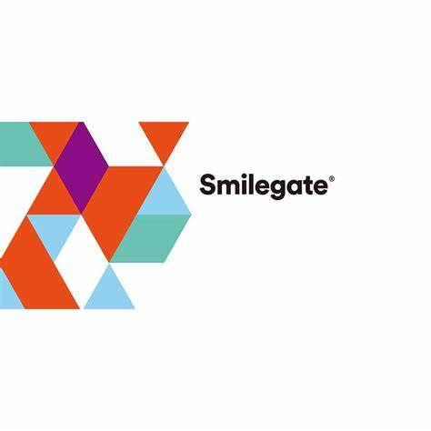

CrossFire CF
CrossFire is an online tactical first-person shooter for Microsoft Windows developed by Smilegate Entertainment. The game was released in China by Tencent Games, with the company also acting as the exclusive agent service company. The tests for its software bugs were started publicly in April 2008.
Due to its popularity in Asia, especially China and South Korea, it became the most played game in the world by player count of all time, with 660 million players worldwide. It was the world's top-grossing online game as of 2014 and went on to become one of the highest-grossing video games of all time, having grossed $10.8 billion in lifetime revenue, as of 2018.
A film adaptation of the game was announced in October 2015. A remake and a sequel, CrossFire HD and CrossFire 2, respectively, are in development at Smilegate, with Remedy Entertainment working on both games' single-player portions. An Xbox One version of the game that incorporates Remedy's campaign, known as CrossFire X, was announced at E3 2019 and is set to be released for free in 2020.
CrossFire is a free-to-play first-person shooter that features two mercenary corporations named the "Black List" and "Global Risk," fighting each other in an epic global conflict. Players assume the role of either a Black List or Global Risk mercenary, joining an online team that must work together to complete objective-based scenarios. Except for the Zombie mode and Wave mode, each mode can support a maximum of 16 players, each divided into an 8-man team.
Players progress and eventually be promoted through various Military Ranks, beginning at trainee, with the highest being Marshall. Players can also customize their character's equipment and appearance through in-game items.
CrossFire has a free currency which is called Game Points (GP), which is earned through playing and completing matches, buying premium items that grant bonus GP, or fulfilling certain missions. Premium and special items like modified weapons can only be bought using monetary currencies. The content tends to vary from version to version.